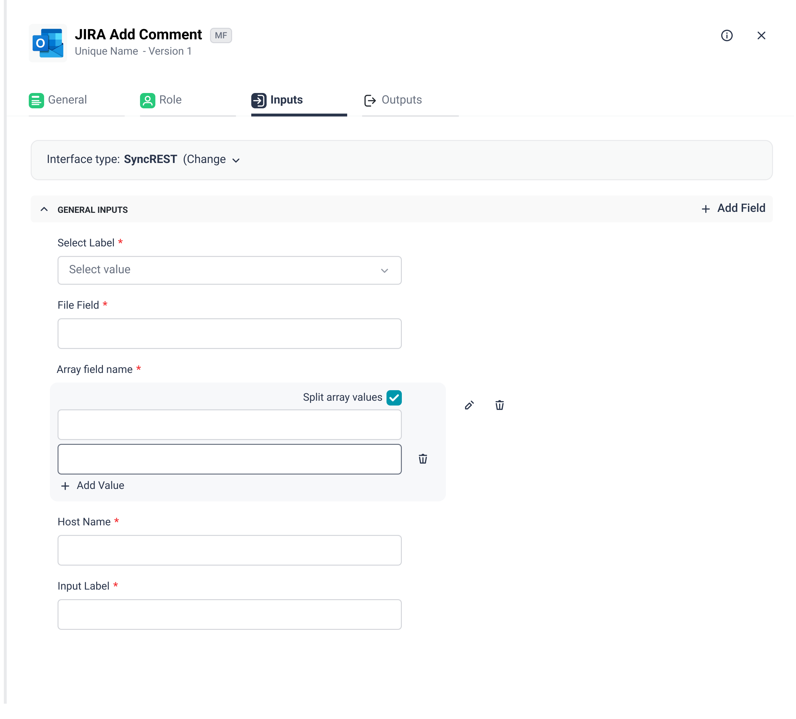
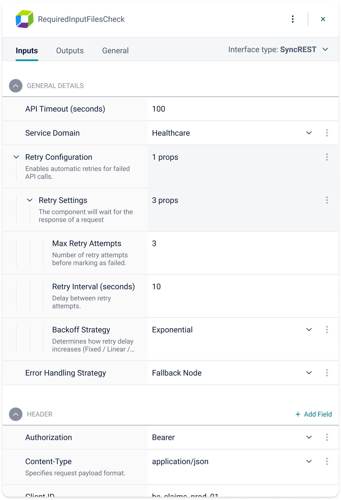
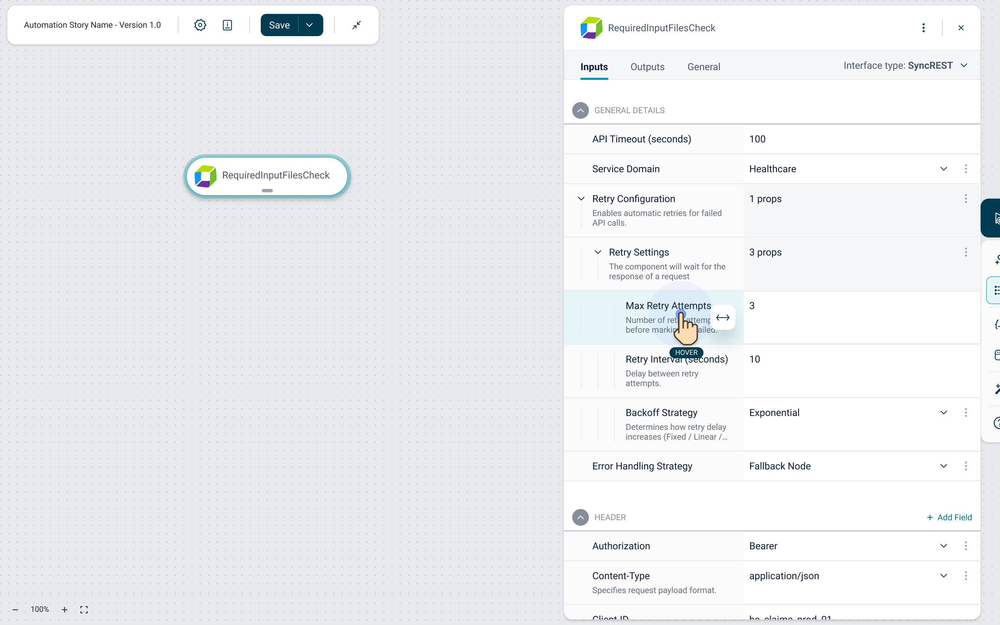
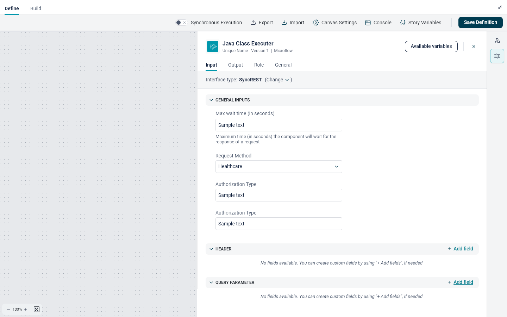
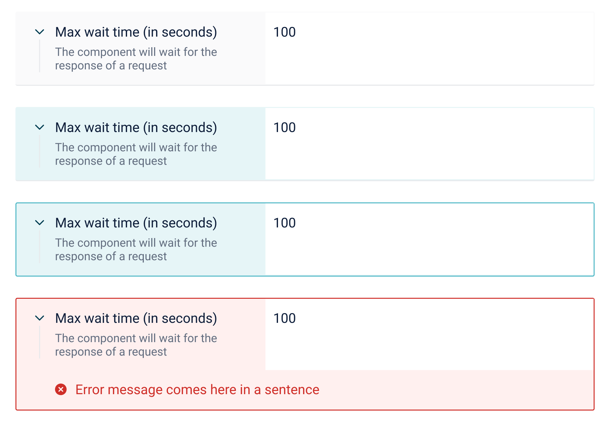

Transforming a space-heavy, stacked form into a compact, interactive property grid to speed up automation setup, reduce errors, and maximize screen real estate.
Role
Product UX Designer
Platform
Web Application
Tools
Figma
Focus
UI Architecture, Systems
Before redesigning, I analyzed the legacy stacked layout against Usability Heuristics to identify core structural failures.
The stacked label/input layout consumed too much vertical space. Power users had to constantly scroll to configure standard components, slowing down workflow creation.
Despite taking up screen width, input fields left significant dead whitespace on the right. Heavy borders added unnecessary visual noise to the UI.
Scanning stacked forms caused cognitive fatigue. Users struggled to track parent-child relationships and spatial orientation in long property lists.
In complex workflow builders, users manage dense amounts of data simultaneously. The V1 design hindered this through poor space utilization.
Screenshot: V1 Stacked Layout

Transitioning to an inline property grid—a pattern familiar to IDE users—instantly doubled information density while reducing visual clutter.
Screenshot: V2 Inline Layout

Slide to compare the legacy stacked form with the new high-density property grid.


Handling the complexities of a dense interface requires clear interactive states and progressive disclosure.
Hover, Focus, and Error States

Built using comprehensive Figma variants to create a highly modular component library. This ensured pixel-perfect consistency across complex interaction states and created a streamlined handoff process that directly mirrored front-end component logic.